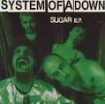

|
System Of A Down is an Armenian-American heavy metal and rock&roll band formed in Glendale, Califonia in 1994.It currently consists of members Serj Tankian, Daron Malakian, Shavo Odadjian and John Dolmayon, who replaced original drummer Andy Khachaturian. |
|
Awards |
Kerrang! Awards-Best International Live Act-1999 California Music Awards-Outstanding Group-2003 Metal Storm Awards-Best Alternative Metal Album-Mezmerize-2005 MTV Europe Music Awards-Best Alternative-2005 Grammy Awards-Best Hard Rock Performance-"B.Y.O.B."-2006 ECHO Awards-Best International Rock/Alternative Group-Mezmerize-2006 mtvU Woodie Awards-Greatest Social Impact-"Question!"-2006 Parajanov-Vartanov Institute Awards-Best Film-Wake Up The Souls Tour-2015 |
Serj Tankianis an Armenian-American singer, musician, songwriter, record producer and political activist. he was born at August 21, 1967 in Beruot Lebonan
He's married to Angela Madatyan they have a son, Rumi who ...was born on October 24, 2014. |
|
Daron Malakianis an Armenian-American musician, singer, songwriter, and record producer He is best known as the guitarist, songwriter and second vocalist of metal band System of a Down, and as the lead vocalist, lead guitarist, multi-instrumentalist, and songwriter of Scars on Broadway.
|
|
Shavo Odadjian Shavarsh was born in April 22, 1974 is an Armenian-American musician and songwriter He is best known as the bassist, backing vocalist, and occasional songwriter of SOAD, he also plays bass in Trap group North Kingsley.
|
|
John Dolmayanborn in July 15, 1973 Beriut, Lebanon, he is an Armenian-American drummer and songwriter.
|
Untitled 1995 DemoThe untitled 1995 demo tape was created before the first official demo tape. This tape is notable for having the Mr. Jack demo titled "PIG", which was released 7 years later on Steal This Album!. Another important demo is the Metro demo (titled "The Metro"). |
|
Demo TapeThis Is The 1st Demo Tape, Released After The Untitled 1995 Tape. The tracks were Sugar, Suite-Pee, Dam and P.L.U.C.K |
|
Demo Tape 2 (EP)This is The 2nd Demo Tape, Released In 1996, After Demo Tape 1. Its tracks are Honey, Temper and Soil |
|
Demo Tape 3This Is The 3rd Demo Tape, Which Came After Demo Tape 2. Tracks are Know, War, Peephole and untitled |
|
Demo Tape 4 (EP)This Is The 4th Demo Tape, In 1997. Tracks are Q-Bert, Marmalade, DDevil, Slow, .36, Frick, Mind, Suite-Pee, Blue, Darts, Störagéd, Sugar and Metro |
|
System Of A Down Released on June 30, 1998, The album was certified gold by the RIAA on February 2, 2000. Two years later, after the success of Toxicity, it was certified platinum.
|
|
|  |
Sugar E.P.It was released on 1999, the live tracks recorded on January 19th, 1999 at Irving Plaza in New York City, NY. It has Sugar (Album Version), Sugar (Clean Version), Störagéd, Sugar (Live Version), War? (Live Version), Sugar (Clean Live Version) and War? (Clean Live Version) |
Limited Edition Tour CDLive tracks recorded at the Filmore Theater in Denver, Colorado on January 29, 2000. The Tracks are Suite-Pee, War?, Suggestions, Suite-Pee (Live at the Filmore Theater), War? (Live at the Filmore Theater), Suggestions (Live at the Filmore Theater). |
|
ToxicityToxicity is the second studio album by Armenian-American heavy metal band System of a Down, released on September 4, 2001, through American Recordings and Columbia Records. Expanding on their 1998 eponymous debut, it incorporated more melody, harmonies, and singing than the band's aforementioned album. Categorized primarily as alternative metal and nu metal, Toxicity features elements of multiple genres including folk, progressive rock, jazz, Armenian music and Greek music, including prominent use of instruments such as the sitar, banjo, keyboards, and piano. It contains a wide array of political and non-political themes, such as mass incarceration, the CIA, the environment, police brutality, drug addiction, scientific reductionism, and groupies. Toxicity was recorded at Cello Studios in Hollywood, California. Over 30 songs were recorded, but the band narrowed the number of songs on the album to 14. The album peaked at number one on both the Billboard 200 and the Canadian Albums Chart, sold 220,000 copies in its first week of release, was certified triple-platinum by the Recording Industry Association of America in November 2002, and has sold at least 2,700,000 copies in the United States. All of Toxicity's singles reached the Billboard Hot 100. The final single, "Aerials", went to number one on both the Mainstream Rock Tracks and the Modern Rock Tracks charts. Toxicity received mainly positive ratings and reviews from critics, among them perfect ratings from AllMusic, Kerrang!, and Blabbermouth.net. Many critics praised the album's sound and innovation. |
|
Steal This Album! Steal This Album! is the third studio album by Armenian-American heavy metal band System of a Down, released on November 26, 2002, by American Recordings and Columbia Records. Produced by Rick Rubin and Daron Malakian, it peaked at number 15 on the US Billboard 200.
In early 2002, medium-quality MP3s of the album were released on the internet under the name Toxicity II. The band issued a statement expressing disappointment that fans were hearing material that was unfinished,
and they worked to release a completed, better quality version of the album, which became Steal This Album!.
|
|
Storaged MelodiesStoraged Melodies Made in the year 2002, this is a bootleg CD of unreleased songs, including the song "Will They Die For You"
(featuring other artists) on the South Park Chef Aid Soundtrack, and "The Metro", featured on the "Not Another Teen Movie" Original Movie Soundtrack.
"Marmalade" was included in the soundtrack of the movie, "Strangeland" and "Storaged" in "Heavy Metal 2000".
|
|
MezmerizeMezmerize is the fourth studio album by Soad released on May 17, 2005, by American Recordings and Columbia Records. Upon its release, the album received widespread acclaim from critics.
At a length of just over 36 minutes, Mezmerize is the band's shortest studio album.
Despite the time difference between releases, Mezmerize and Hypnotize were recorded within the same time frame. The album features guitarist Daron Malakian sharing most of the vocal work with vocalist Serj Tankian, splitting the vocals at least halfway on many of the tracks. In 2018, Malakian and Tankian both independently revealed that at the time of recording the two albums, Tankian was almost out of the band. According to Tankian, this was because of differences in creative input and financial revenue split.
Malakian wrote "Old School Hollywood" after playing in a celebrity baseball game for charity. The song mentions Tony Danza and Frankie Avalon, who also played in the game.
|
|
HypnotizeHypnotize is the fifth and most recent studio album by soad It was released on November 22, 2005, six months after the release of its companion album Mezmerize
|
|
Lonely Day (Ep) Edit. "Lonely Day" is a song by soad The song received a nomination for Best Hard Rock Performance at the 49th Annual Grammy Awards. This was System of a Down's last single for 14 years
t was released in 2006 as the second single from their fifth album Hypnotize (2005), and written by guitarist Daron Malakian, who also provides lead vocals on this track.
|
|
System of a Down: 5 Album BundleCompilation album by System of a Down |